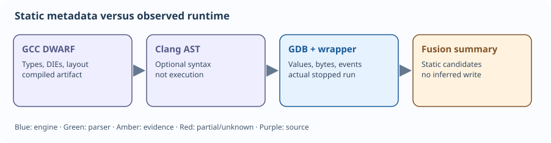

DWARF, Clang AST and evidence fusion #
Level 1 · Intuition #
Static metadata helps explain what a stopped value might be: DWARF identifies the compiler's types and declarations; optional Clang AST identifies syntax and source spans. GDB supplies dynamic runtime values. None of these static sources alone proves that a C expression executed. Fusion supplies carefully qualified links between existing records, never replacement values or invented writes.


Level 2 · The three evidence streams #
dwarf::extract_excluding scans the actual GCC-built debug artifact, excluding the injected tracker source, and builds a bounded TypeRegistry of units, type entries and declarations. dwarf::associate attaches uniquely correlated type/declaration IDs to runtime variables, preserving GDB-observed addresses and sizes. Clang is opt-in (--clang-ast): clang_ast::analyze parses source syntax into a SourceMetadataRegistry; a missing tool/partial translation unit is recorded, not silently treated as an empty program. Clang's view of preprocessing/type layout may differ from GCC's; cross-provider correlation may be unavailable.
After runtime capture and heap reconstruction, evidence::fuse runs once. src/evidence/declarations.rs links eligible static declarations/members, source_links.rs considers runtime/declaration references, heap.rs records heap-call candidates/ambiguities, and validation.rs rejects unsafe links. EvidenceFusionSummary counts only serialized links and rejected links. No GDB command is issued during fusion, no registry is copied per snapshot, and absence of both providers leaves fusion absent. The parser's TP-2 metadata index maps string IDs to positions, not cloned declarations.
Worked ambiguity #
Two heap-call expressions on one source line—or a macro expanding to one—can share a line with a recorded allocation event. The relationship can be a candidate or ambiguous; a same-line match is never a dynamic expression-to-event identity. TP-6 source_expression(id).execution_confidence remains Unavailable even if heap_call_candidates exist. This is important when writing future Stage 2 explanations.
Level 3 · Files and API #
src/dwarf.rs::{TypeRegistry, extract_excluding, associate}reads ELF/DWARF, matches unique declarations and reports missing/ambiguous data.src/clang_ast.rs::{SourceMetadataRegistry, analyze, correlate_heap_calls}produces optional static syntax.src/evidence/mod.rs::fuseandsrc/evidence/{declarations,source_links,heap,validation}.rsperform bounded reconciliation;src/models.rs::EvidenceFusionSummaryserializes counts.TraceStore::type_entry(id),dwarf_declaration(id),source_declaration(id),source_expression(id)return borrowed indexed metadata;ValidatedSemanticView::source_expression(id)adds confidence and indexed candidate/ambiguity event positions.
// Real TP-6 API; expression IDs belong to this trace, not to other runs.
let expression = validated.source_expression(expression_id);
let syntax = expression.expression; // Option<&SourceExpression>
let execution = expression.execution_confidence; // Unavailable on sound traces
for candidate in expression.call_sites() {
let _ = (candidate.event_position, candidate.event);
}The snippet assumes validated and expression_id are already defined; run the complete parser walkthrough first. See the public API reference for signatures.